Specialised care for children, adolescents and adults across South East Queensland, bringing together comprehensive occupational assessments, high-quality clinical reports, and child- and family-centred paediatric Occupational Therapy.
With more than 20 years of clinical experience, Navi offers collaborative, practical and personalised care to support participants, families and teams in making decisions, building independence, and taking part in the activities that matter most.
You steer. We support.
Occupational assessments: immediate availability.
Ongoing in-clinic paediatric Occupational Therapy: currently limited availability in Robina.
Navi currently has limited availability for new ongoing in-clinic paediatric appointments, as the schedule is largely full. This reflects current availability — not a lower priority for this service within the practice.
Beyond the two core pillars, Navi offers services that complement a comprehensive, evidence-based clinical practice.
Trust is built through clinical consistency, clear communication and truly individualised care.
You steer the journey. Navi provides the clinical support, clarity and collaboration you need along the way.
Solid clinical experience, contemporary Australian practice, and a way of caring that puts the person and family at the centre.
Navi Occupational Therapy was founded by Amanda Lasco, an Occupational Therapist who graduated in Brazil in 2006. Before moving to Australia in 2022, Amanda built a solid clinical career across a range of health settings, including mental health, the public system, rehabilitation and multidisciplinary work.
In Australia, she broadened her experience within the NDIS, supporting children, adolescents and adults across a wide range of needs and disabilities. Her work includes Functional Capacity Assessments, Assistive Technology, Home Modifications, Medico-Legal assessments, paediatric services and comprehensive clinical report writing.
Today, Navi combines more than two decades of international clinical experience with contemporary Australian practice. The goal is to offer high-quality, evidence-based Occupational Therapy that is collaborative and centred on the goals of each participant and their family.
A simple first step to understand the need, confirm availability and work out the best way to help.
As availability for ongoing in-clinic appointments is currently limited, we recommend getting in touch to confirm current openings and options for care.
Whether you need an occupational assessment, a high-quality clinical report, paediatric support, or simply want to talk through a referral, Navi is ready to guide the next steps.
At Navi, every person is more than an assessment, a report, or a list of goals. Our role is to understand what matters to you and to offer careful, clear, evidence-based clinical support to help you navigate every next step with confidence.
You Steer, We Support.